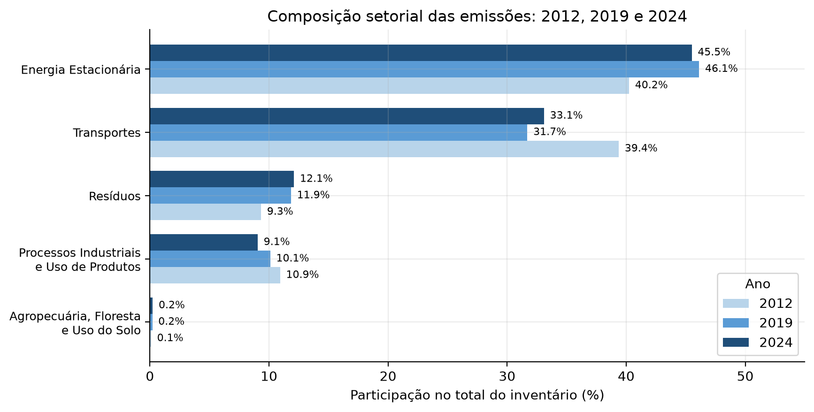
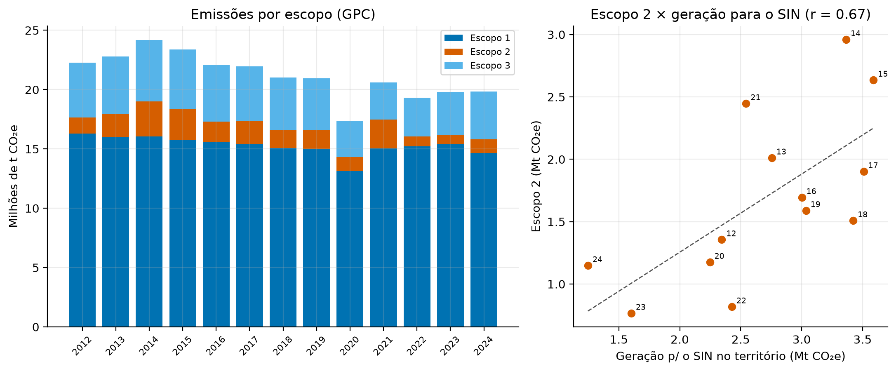
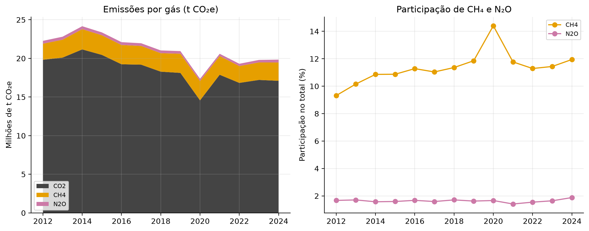

As cidades precisam de inventários de gases de efeito estufa (GEE) para orientar metas de mitigação, mas séries publicadas em planilhas dificultam a análise reprodutível. Este trabalho constrói um pipeline determinístico em Python que converte a Tabela 3696 do Data.Rio/IPP, com as emissões da cidade do Rio de Janeiro entre 2012 e 2024 segundo a metodologia GPC, em um conjunto de dados longo, validado e aberto, e o explora por setor, escopo e gás. As emissões totais passaram de 22,27 Mt CO₂e em 2012 para 19,84 Mt em 2024 (-10,9%), com pico em 2014 e mínimo em 2020. Energia estacionária e transportes concentram cerca de 79% do total. O Escopo 2 (eletricidade) é o componente mais volátil (coeficiente de variação de 40%, contra 5% do Escopo 1) e se associa moderadamente à geração para o sistema elétrico nacional. A redução líquida decorre sobretudo da aviação, do transporte rodoviário e da siderurgia, parcialmente compensada pelo aterramento de resíduos; a participação do metano subiu de 9,3% para 11,9%. Discutem-se limitações da série e propostas de trabalhos futuros.
Palavras-chave: emissões de gases de efeito estufa; inventário GPC; cidade do Rio de Janeiro; análise exploratória; ciência aberta (FAIR).
Cidades concentram grande parte das emissões antrópicas de gases de efeito estufa e, ao mesmo tempo, dispõem de instrumentos de política local (uso do solo, mobilidade, resíduos, edificações) para reduzi-las. O Global Protocol for Community-Scale Greenhouse Gas Emission Inventories (GPC) padronizou a contabilidade urbana de GEE em setores e em três escopos: emissões dentro do território (Escopo 1), emissões associadas à energia da rede consumida na cidade (Escopo 2) e emissões que ocorrem fora do território por atividades nele realizadas (Escopo 3) (WRI; C40; ICLEI, 2014).
O Instituto Municipal de Urbanismo Pereira Passos (IPP) publica no portal Data.Rio a série anual de emissões do Rio de Janeiro. A série traz detalhes valiosos, mas vem em planilha com cabeçalhos em dois níveis, itens informativos que não somam no total e símbolos de dado ausente, o que dificulta a reutilização direta. Este trabalho trata a tabela como um problema de engenharia de dados e, a partir dela, busca responder:
Os dados são a Tabela 3696 do Data.Rio/IPP, “Emissões de gases de efeito estufa (GEE) da Cidade do Rio de Janeiro”, em toneladas de CO₂ equivalente (t CO₂e), de 2012 a 2024 (versão de setembro de 2026). A unidade de observação é subsetor × ano × componente. O arquivo (3696.xls) tem duas abas com o mesmo inventário: 3696_Escopos (Escopo 1, 2, 3 e total) e 3696_GEE (CO₂, CH₄, N₂O e total). As emissões já vêm convertidas em CO₂e com os potenciais de aquecimento global do quinto relatório do IPCC (IPCC, 2014). As estimativas de 2012–2021 foram revisadas em 2024, conforme as notas da fonte.
ffill e a tabela larga vira formato longo (4,056 linhas).setor (5), subsetor (31), total e memo. Os itens memo (geração para o Sistema Interligado Nacional e compostagem) pertencem ao inventário territorial, mas, pela metodologia GPC, não somam no total; são mantidos à parte para não gerar dupla contagem.NaN, sem imputação, porque nenhum método de preenchimento seria defensável para dados de inventário.data/processed/etl_log.txt.Trechos centrais do pipeline (src/etl.py):
def parse_sheet(raw: pd.DataFrame, dimensao: str) -> pd.DataFrame:
"""Converte a tabela larga (anos x componentes nas colunas) para formato longo."""
anos = raw.iloc[3, 1:].ffill().astype(int).tolist() # ano só aparece na 1ª coluna do bloco
comps = raw.iloc[4, 1:].astype(str).str.strip().tolist() # Escopo 1/2/3/Total ou CO2/CH4/N2O/Total
...
for i in range(6, idx_fim):
nome = _norm(rotulos[i])
if nome in SETORES: nivel = "setor"
elif nome == "TOTAL": nivel = "total"
elif i > idx_total: nivel = "memo" # itens que NÃO somam no total (GPC)
else: nivel = "subsetor"
...def _to_num(v):
"""'-' = zero (nota 5); '(0)' = zero por arredondamento; '...' e 'NE' = ausente (NaN)."""
if isinstance(v, (int, float, np.number)):
return float(v)
s = str(v).strip()
if s in {"-", "(0)", "0"}:
return 0.0
if s in {"...", "NE", "", "nan"}:
return np.nantot = df[(df.nivel == "total") & (df.componente == "Total")].set_index(["dimensao", "ano"])["valor_tco2e"]
soma = (df[(df.nivel == "setor") & (df.componente == "Total")]
.groupby(["dimensao", "ano"], observed=True)["valor_tco2e"].sum())
assert (tot - soma).abs().max() < 1e-3 # os 5 setores reproduzem exatamente o TOTAL publicadoAs emissões totais caíram de 22,27 Mt CO₂e em 2012 para 19,84 Mt em 2024 (-10,9%; CAGR de -0,96% ao ano). A série subiu até o pico de 24,17 Mt em 2014, e o nível de 2024 está 17,9% abaixo desse pico. Entre 2019 e 2020 houve queda de 17,1% (mínimo de 17,36 Mt) e, em 2021, recuperação de 18,7%. Uma regressão linear simples indica tendência de -0,37 Mt por ano (R² = 0,61, p = 0,002); com apenas 13 observações autocorrelacionadas, vale como descrição da inclinação, não como inferência causal.
A composição mudou: energia estacionária subiu de 40,2% para 45,5% do total, enquanto transportes recuaram de 39,4% para 33,1%. Esse movimento não indica crescimento da energia estacionária, que variou apenas +0,7% no período. Ele resulta da queda de 25,1% em transportes, que reduziu o denominador. Resíduos cresceram 15,5% e processos industriais caíram 26,3%. O setor agropecuário, florestal e de uso do solo dobrou, mas parte de uma base mínima (cerca de 0,1% a 0,2% do total).
| Setor | 2012 | 2019 | 2024 | Var. 2012–24 | CV 2012–24 |
|---|---|---|---|---|---|
| Energia Estacionária | 40,2% | 46,1% | 45,5% | +0,7% | 9,0% |
| Transportes | 39,4% | 31,7% | 33,1% | -25,1% | 19,8% |
| Resíduos | 9,3% | 11,9% | 12,1% | +15,5% | 6,6% |
| Processos Industriais e Uso de Produtos | 10,9% | 10,1% | 9,1% | -26,3% | 9,7% |
| Agropecuária, Floresta e Uso do Solo | 0,1% | 0,2% | 0,2% | +103,1% | 28,8% |
| Total | 100% | 100% | 100% | -10,9% | 8,7% |
Tabela 1. Participação no total, variação e coeficiente de variação por setor.

Entre os dois maiores setores, transportes são o mais sensível a choques (CV de 19,8%, contra 9,0% da energia estacionária). A queda de 2020 é compatível com as restrições de mobilidade da pandemia de covid-19, e a recuperação posterior é parcial, o que as séries de aviação e transporte rodoviário (RQ3) detalham. Associar a queda à pandemia é uma interpretação de contexto; os dados do inventário não medem a causa.
O Escopo 1 (emissões dentro do território) responde por entre 66% (2014) e 79% (2022) do total e é o componente mais estável (CV de 5,2%). O Escopo 3 oscila mais (CV de 17,4%) e cai de cerca de 21% do total em 2014 para 15% em 2021. O Escopo 2, ligado à eletricidade consumida, tem CV de 40,2%: atinge 2,96 Mt em 2014 (12,2% do total) e apenas 0,77 Mt em 2023.
Como o Escopo 2 depende do fator de emissão da rede elétrica, e não só do consumo da cidade, grande parte da sua oscilação deve refletir a matriz do sistema nacional naquele ano. Um indício nos próprios dados é a associação entre o Escopo 2 e a geração de energia elétrica para o Sistema Interligado Nacional (SIN) reportada como item informativo, com r = 0,67 (Figura 4). A correlação é moderada, e a relação não é linear nem estável no tempo (por exemplo, 2021 destoa). Portanto, o resultado sugere, sem comprovar, que o Escopo 2 é um indicador ruim de esforço local de eficiência e que metas urbanas devem distinguir reduções sob controle da cidade (Escopo 1) das induzidas pela rede.

A redução líquida de 2,43 Mt entre 2012 e 2024 é a soma de movimentos de sinais opostos. Os três maiores contribuintes de queda são aviação (−1,21 Mt; −37,9%), transporte rodoviário (−0,92 Mt; −17,1%) e produção de ferro e aço (−0,66 Mt; −28,8%), que juntos somam 2,80 Mt, ou seja, mais que toda a redução líquida. O aterramento de resíduos (+0,38 Mt; +24,0%), as indústrias de energia (+0,19 Mt) e as indústrias de manufatura e construção (+0,16 Mt) compensam parte da queda. Na aviação, a queda já está presente antes da pandemia (de 3,20 Mt em 2012 para 2,29 Mt em 2019), logo não se explica apenas por 2020.
Quanto aos gases, o CO₂ permanece dominante, mas perde participação: de 89,0% (2012) para 86,2% (2024), com queda absoluta de 13,7%. O metano cresce 14,2% e sua participação sobe de 9,3% para 11,9%, em linha com o aumento do aterramento de resíduos, fonte típica de CH₄. O N₂O fica praticamente estável em termos absolutos (+0,2%) e responde por menos de 2% do total. Assim, a descarbonização observada é essencialmente de CO₂ (combustíveis), e a agenda de resíduos e metano ganha peso relativo.

RQ1. As emissões do Rio caíram 10,9% entre 2012 e 2024, com pico em 2014 e mínimo em 2020; energia estacionária e transportes concentram cerca de 79% do total. RQ2. O Escopo 2 é o mais volátil e se associa à geração do sistema elétrico nacional, o que o torna um indicador frágil do esforço local. RQ3. A redução líquida vem de aviação, transporte rodoviário e siderurgia, e o metano ganha participação por causa dos resíduos.
Limitações. (i) São 13 pontos anuais, o que limita testes estatísticos; (ii) a série foi revisada em 2024 e pode ser revisada de novo; (iii) o inventário não traz causas, de modo que explicações como a pandemia ou a matriz elétrica são hipóteses de contexto; (iv) valores “NE” e “...” não foram imputados; (v) a análise é agregada para a cidade e não diferencia bairros ou fontes individuais.
Trabalhos futuros. Cruzar a série com população, PIB municipal e fator de emissão da rede para calcular intensidades per capita e por unidade de PIB; decompor a variação do Escopo 2 em efeito consumo e efeito fator de emissão; e comparar o Rio com outras cidades signatárias do GPC.
README.md, palavras-chave, autoria, disciplina e semestre; dados brutos referenciados pelo link da fonte..csv.gz (formato aberto) e data/data_dictionary.md descrevendo cada variável.requirements.txt com versões fixas.Para reproduzir todo o pipeline:
git clone https://github.com/carlosAugusto7/emissoes-gee-rio.git
cd emissoes-gee-rio
python -m venv .venv && source .venv/bin/activate # Windows: .venv\Scripts\activate
pip install -r requirements.txt
python -m src.etl # data/raw/3696.xls -> data/processed/*.csv.gz
python -m src.analysis # figuras e métricas em docs/assets/
python -m src.build_site # regenera docs/index.html